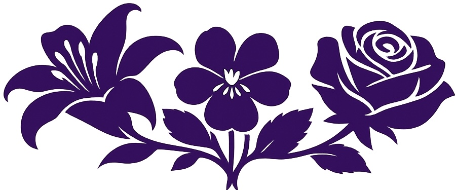

Nurturing Communication with Care
Little Way Speech Therapy is a sole proprietorship owned and operated by speech-language pathologist Kathleen 'Kat' Winger, M.S., CCC-SLP, in San Diego, California.
Little Way Speech Therapy is grounded in the belief that no act of care is too small when done with great love. Inspired by St. Thérèse of Lisieux’s ‘Little Way,’ this philosophy reflects patience, compassion, and the belief that small moments of connection can lead to meaningful growth.An Independent Educational Evaluation (IEE) is a second opinion regarding your child’s need for special education services in school. It is a comprehensive evaluation done at a parent's request following an IEP evaluation, either because a child is denied for special education services or because the services approved are judged by the parent to be inadequate. Under federal law, parents are entitled to an IEE for their child.
You can request that your child’s IEE be completed by Little Way Speech Therapy whether or not we’re listed as a preferred provider by your school district.
To receive services through Little Way Speech Therapy, request us as your vendor through San Diego Regional Center after you are approved for speech therapy services. We would be honored to work with you and your child!
Little Way Speech Therapy partners with the University of St. Augustine for Health Sciences (USAHS) in San Marcos, California, as a clinical education site for graduate student clinicians. Graduate student clinicians are carefully interviewed and selected and may accompany licensed speech-language pathologists during Early Start home visits. To better support the diverse cultural and linguistic backgrounds of the families we serve, bilingual student clinicians are given priority when available. Student clinicians are not present for, or involved in, Independent Educational Evaluations (IEEs).